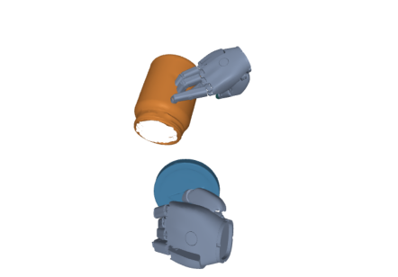
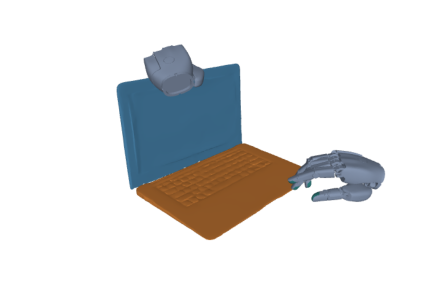
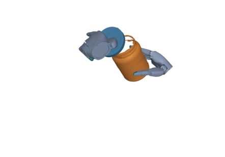
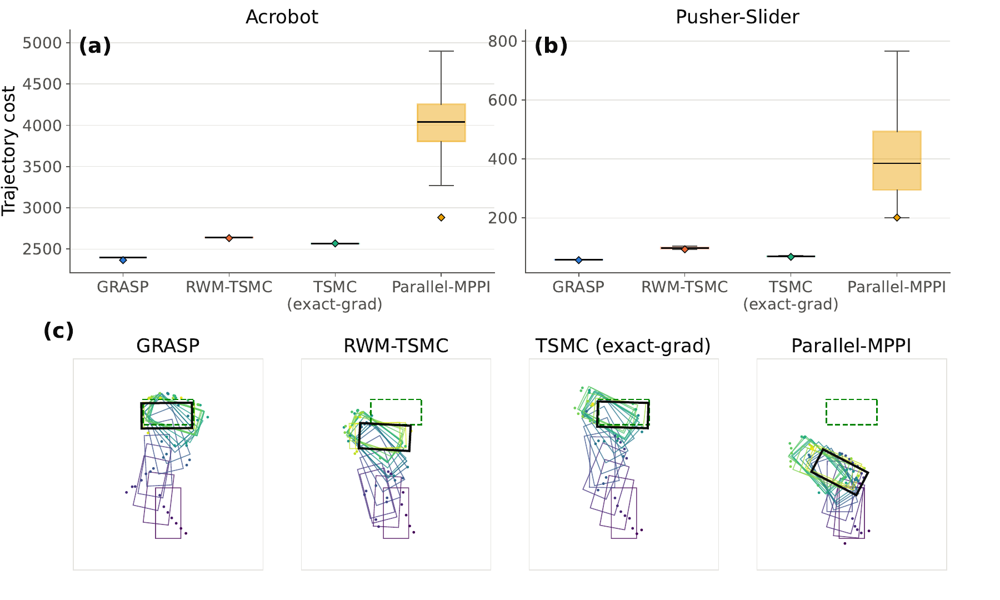

Explore
Sample candidate controls and evaluate their costs in parallel physics rollouts.
Physics-based motion optimization
Recovering Gradients for
Contact-Rich Trajectory Optimization
Learning where to move next,
from the motions already explored.


The idea
Contact changes can make simulator gradients unreliable or unavailable. GRASP reuses evaluated trajectory–cost pairs—even rejected proposals—to recover useful search directions and refine a population of motions.
Gradient-guided search.
Without differentiating through the simulator.
01 / Motion
Bimanual retargetingTwo Sharpa hands realize coordinated hand–object motion in simulation, using a common state-tracking objective and optimizer configuration.
Interaction 01
Coordinate both hands to tilt a container and maintain the receiving vessel.
Simulation keyframes
Four sampled states from each executed trajectory. View the paper figure ↗
02 / Method
Gradient recovery from rolloutsGRASP extends tempered sequential Monte Carlo with local models fitted to accumulated rollout feedback.
Sample candidate controls and evaluate their costs in parallel physics rollouts.
Fit a local quadratic model to the archive, including rejected proposals.
Guide new proposals with recovered gradients; use simulator costs for acceptance.
The surrogate guides the proposal.
The simulator evaluates the motion.
Tempering concentrates the population toward lower costs. Receding-horizon planning executes a short control prefix, then replans from the state actually reached.
Under a Gaussian fitting measure, the population quadratic coefficients recover the gradient and Hessian of a Gaussian-smoothed cost. This connects local regression to a smooth search direction across contact-mode discontinuities. In the implementation, the finite weighted archive, temporal basis, and regularization determine the recovered direction.
03 / Results
From control to manipulationEvaluated on smooth dynamics, discrete contact transitions, and bimanual retargeting from OakInk2 demonstrations.
03.1 / Bimanual retargeting
| Method | Success ↑ | Position error ↓Mean / median · cm | Rotation error ↓Mean / median · rad |
|---|---|---|---|
| GRASP Ours | 94.00% | 3.21 / 2.24 | 0.118 / 0.101 |
| DAID full | 86.00% | 4.55 / 3.73 | 0.260 / 0.163 |
| DAID annealed | 50.00% | 125.02 / 7.93 | 0.492 / 0.345 |
| SPIDER mjwp | 45.00% | 54293.09 / 7.20 | 0.596 / 0.437 |
| SPIDER ACT | 56.00% | 9.89 / 8.24 | 0.309 / 0.169 |
Success requires mean object position error < 10 cm and rotation error < 0.5 rad. Execution failures count as failures. Error statistics use finite error pairs; unstable trajectories can produce large means.
03.2 / Trajectory optimization
On acrobot, GRASP achieves comparable cost to gradient-based TSMC with a 15.9× reduction in reported runtime. On pusher-slider, both solve all 11 runs.
Seven acrobot seeds; eleven pusher-slider seeds. The pusher-slider gradient comparator uses a straight-through contact relaxation.

GRASP
Yang Liu* · Tong Wang* · Yiming Bao · Heng Yang
Back to top ↑